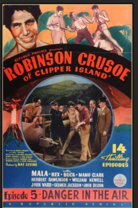

Country:United States, 256 minutes
Spoken languages:English
Genres:Action
Director(s):Mack V. Wright, Ray Taylor
Writer(s):
Video Codec:Unknown
Number: 4655

Certification:
Storyline:
A 14-episode serial in which Mala, a Polynesian in the employ of U.S. Intelligence investigates sabotage on Clipper Island. A gang of spies causes the eruption of a volcano, for which our hero is blamed. He convinces the local Princess Melani of his innocence and helps her ward off a takeover by rival high priest Porotu.
Cast:
Mala (as Agent Ray Mala), Rex (as Rex, the Wonder Horse), Mamo Clark (as Princess Melani), Herbert Rawlinson (as Grant Jackson), William Newell (as Hank McGlaurie)
Medium: Media file,
Location: D:\Personal\Sarah Disk\Documents\Curse\Minecraft\Install\assets\virtual\legacy\sound\ambient\cave\cave8.ogg
Loaned: No
Aspect ratio: Unknown